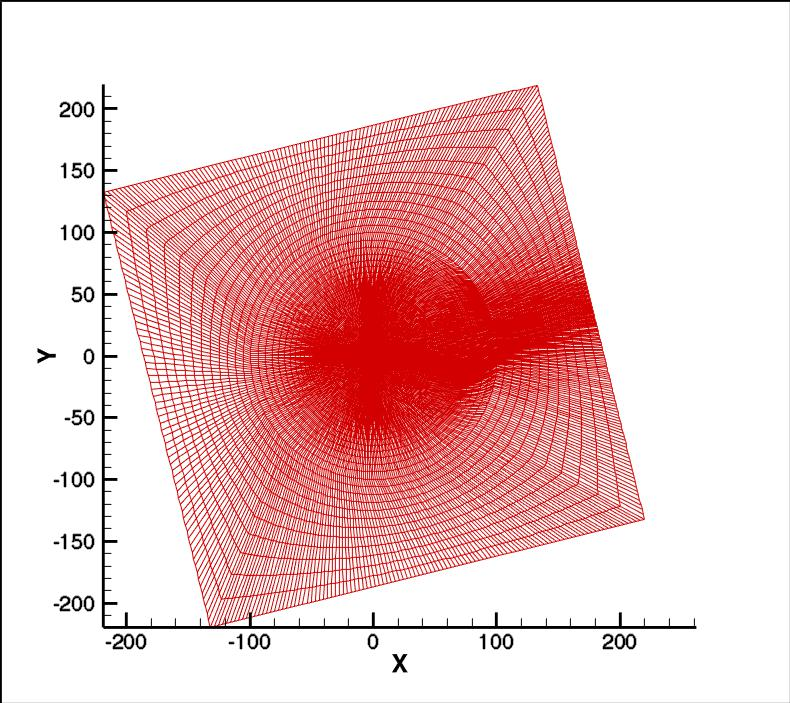
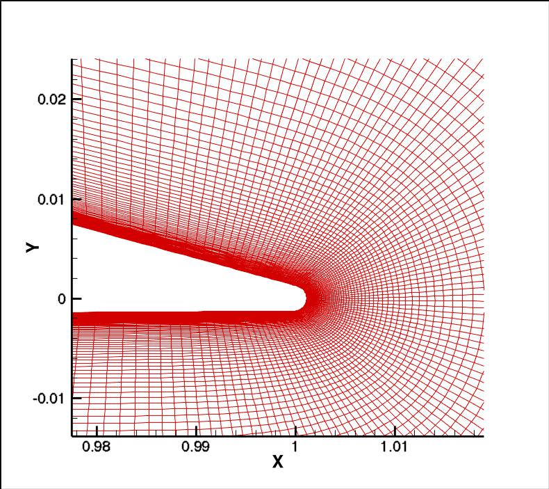

|
Langley Research CenterTurbulence Modeling Resource |
Return to: 2D NACA 4412 Airfoil Trailing Edge Separation Case Intro Page
Return to: Turbulence Modeling Resource Home Page
Auxiliary Grids - NACA 4412 Airfoil Trailing Edge Separation Case
A single O-grid was built by G. Gerolymos and I. Vallet of University Pierre and Marie Curie.
This 4412 grid used the exact NACA 4412 shape, with finite trailing edge thickness closed off with a small circle so that the T.E.
extended slightly beyond x/c=1 (to x/c=1.0011). The O-grid cut occurs off of the trailing edge. The grid size is 481 x 253,
with approximately the same minimum yplus grid spacing as the second-finest grid (897x257) of the
C-grid family. The figures below show
two views of the grid. This grid is not a part of a larger family intended for grid studies.


Note: be sure to use double precision when reading the grids!
STRUCTURED VERSIONS OF GRIDS
PLOT3D Files
The structured PLOT3D grid is given in two different ways, as a 2-D grid (x-y plane) or as a 3-D grid (two
identical x-z planes, separated by a distance y=1,
giving one spanwise cell). You may use whichever is more convenient for your particular
application.
Format for the structured 2D grids is PLOT3D-type, formatted, MG, 2D (nbl=1) - note that you
must use double precision when reading! :
read(2,*) nbl
read(2,*) (idim(n),jdim(n),n=1,nbl)
do n=1,nbl
read(2,*) ((x(i,j,n),i=1,idim(n)),j=1,jdim(n)),
+ ((y(i,j,n),i=1,idim(n)),j=1,jdim(n))
enddo
Download the 2-D version of the grid in PLOT3D format here:
Format for the structured 3D grid is PLOT3D-type, formatted, MG, 3D (nbl=1, and idim in this case is 2) - note that you must use double precision when reading! :
read(2,*) nbl
read(2,*) (idim(n),jdim(n),kdim(n),n=1,nbl)
do n=1,nbl
read(2,*) (((x(i,j,k,n),i=1,idim(n)),j=1,jdim(n)),k=1,kdim(n)),
+ (((y(i,j,k,n),i=1,idim(n)),j=1,jdim(n)),k=1,kdim(n)),
+ (((z(i,j,k,n),i=1,idim(n)),j=1,jdim(n)),k=1,kdim(n))
enddo
Download the 3-D version of the grids in PLOT3D format here:
If desired, an example Neutral Map File associated with the 3-D version of the grid is given here (this file specifies grid indices associated with each boundary condition - see The Neutral Map File):
Return to: 2D NACA 4412 Airfoil Trailing Edge Separation Case Intro Page
Return to: Turbulence Modeling Resource Home Page
Responsible NASA Official:
Ethan Vogel
Page Curator:
Clark Pederson
Last Updated: 05/13/2019